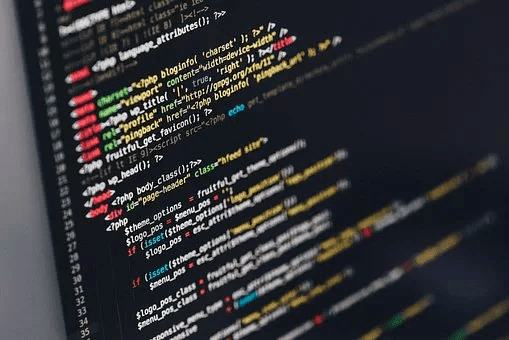

Blog Tech
En esta sección hablaré acerca de todos los conceptos relacionados a tecnología, pero en especial al Desarrollo Web.HTML un lenguaje con una historia increible y emocionante
Autor: Hairton Mayhuay ⇒ Fecha: --/09/2020HTML un lenguaje amado por unos y no tan comprendido por otros. Nació en 1991 gracias al Científico Tim Berners-Lee.
Ahora bien, esa historia es para otro momento si bien es cierto HTML Y LA WEB nacierón juntas ambas tienen una importancia fundamental en el mundo moderno del desarrollo web.
Algunos desarrolladores / programadores novatos opinan que html es un simple lenguaje, sin importancia y que estan fácil de aprender ya que solo tiene etiquetas (tags). Dichas afirmaciones no son del todo ciertas, explicaré mis razones.
HTML no solo es semántica sino también un conjunto de API's. La nueva versión de HTML, la cual es HTML5, tiene mejoras en la semántica como por ejemplo etiquetas que permiten una mayor comprensión de la estructuración de nuestra website. "header, nav, section, article, aside, footer, entre otros". Además trae consigo los formularios.
Por otro lado, la API, de HTML5 trae consigo la capacidad de guardar datos del lado del cliente. usando Web Store, tenemos además la capacidad de dibujar con "JS", usando canvas (tag). Tenemos además Web Notifications. entre muchas mejoras.
HTML no es el lenguaje que conocimamos en los años 90, es muy distinto tiene una fascinante historia desde su creación en el CERN, hasta la especificación de su versión más actual. Merece una gran reverencia, si bien es cierto no es un lenguaje de programación como java, JS, python, PHP, pero su importancia hoy en dia no tiene cuestión.
Variables en CSS
Autor: Hairton Mayhuay ⇒ Fecha: --/09/2020CSS (Lenguaje de Estilos), es uno de los lenguajes más importantes dentro de la web, ya que con el podemos dar vida y estilos a nuestra website. Es un lenguaje súper interesante y con mucho potencial.
Más aún con la llegada de CSS3, aunque realmente CSS3 nunca salió a la luz, sino que más bien es un método de Marketing y Publicidad, pero esto no quiere decir que no tengo mejoras, es todo lo contrario.
Ahora bien, veamos ¿Como son las variables CSS?. Una variable es un espacio en memoria que almacena un dato o un valor.. Esto lo sé es un término para programadores o estudiosos de la industria Tech, pero vamos a ponerlo más sencillo, porque lo imporante es que aprendan.
Una variable es cómo una caja en la cual podemos guardar lo que nosotros queramos en la tématica actual, podemos guardar un color, ancho, altura, tipo de letra, números, carácteres, Strings, etc. Veamos un breve ejemplo.
Arduino
Autor: Hairton Mayhuay ⇒ Fecha: 13/09/2020Arduino es una plataforma electrónica open-source tanto en hardware como en software. Cuando hablamos de hardware libre y software libre, esto implica en el caso del hardware que las arquitecturas, diseños, planos de los componentes electrónicos son de acceso público. En el caso del software, el código fuente, las especificaciones, métodologias serás de acceso público.
El Proyecto Arduino, nació en el año 2005, en el Instituto de Diseño Interactivo IVRAE en Italia en particular por el estudiante Massimo Banzi, el objetivo era faciltar el uso de la electrónica y la programación.
Ya que en aquellas épocas habia una placa muy comercial llamada BASIC STAMP, sin embargo su costo era de $100.
La idea de Arduino es poder tener tanto el hardware como el software en una placa compacta y que tenga acceso a los principales periféricos de entrada y salida. Es por elllo que Arduino es como un pequeño computador.
Arduino, es una gran alternativa para desarrolladores, programadores, estudiantes, profesores, y personas que no esten en el mundo Tech.
En la actualidad existen diferentes y múltiples formas de placas Arduino, cada cual se adapta a las necesidades del proyecto.
En conclusión, con Arduino puedes dar un salto a la programación y al mundo del Open source. No lo pienses más Aprende, Crea y Mejora el Mundo. arduino.com.
Platzi
Autor: Hairton Mayhuay ⇒ Fecha: 14/09/2020Platzi, es una Plataforma Educativa Online, cien por ciento de latinoamérica sus fundadores son John Freddy Vega el CEO y Christian Van Der Henst el Co-Fundandor (COO).
John Freddy Vega, nació en los 80's en Bogotá-Colombia, a sus 17 años de edad fundó su primera empresa online llamada Cristalab, en el año 2004. En la época estaba muy demoda y era muy demandado Flash. Freddy comenta: "Cristalab me permitió cometer errores, aprender a contratar gente y entender porqué muchos emprendimientos mueren".
En particular Freddy Vega, es uno de los referentes más grandes en la industria Tech. Cuando murió Cristalab, nació Platzi.
Christian Van Der Henst, es un guatemalteco que nació el 9 de marzo de 1982, el fue el fundador de Maestros del Web, en el año 1997. Era un foro para los Webmasters.
El menciono en su plataforma Maestros del Web: "Se me ocurrió que sería la comunidad hispana para Webmasters. Luego se me ocurrió buscar un nombre relacionado con Webmasters. Y allí surgió la idea de traducir este término, lo que le dio el nombre de "Maestros del Web, en este espacio".
Actualmente es el COO, de Platzi y es Co-fundador junto con John Freddy Vega. Ambos decidierón unirse para crear Mejorando La Web lo que después llegó a ser Platzi.
Ahora bien Platzi es la primera empresa en latinoámercia en entrar a Y Combinator (YC). Y Combinator es el mayor fondo de inversiones para startups, es la comunidad de los mejores emprendedores de la tierra. Como dato adicional YC, es la mayor escuela de startups en el mundo, de cada 60,000 empresas solo aceptan el 3%.

En conclusión si es estas pensando en estudiar tecnología, Diseño, Marketing, Negocios, Idiomas, entre otros, invierte en Platzi, es una plataforma seria y con muchas ventajas para un Autodidacta.
¿Qué es una API?
Autor: Hairton Mayhuay ⇒ Fecha: 11/09/2020Una API o (Application Programming Interface), es una interfaz valga la redundancia, que permite la conexión y comunicación entre aplicaciones de software y dicha comunicación otorga la capacidad de consumir data y procesarla.
Según Red Hat meciona: "Una API es un conjunto de definiciones y protocolos que se utiliza para desarrollar e integrar el software de las aplicaciones".
Ahora bien surge la cuestión ¿Por qué utilizar una API?, bueno supongamos que deseas hacer una aplicación que ofrezca servicios de transporte algo asi como un UBER o Cabify, necesitarias crear desde cero todo el sistema de navegación e integrar los diferentes métodos para sondear y rastrear el recorrido del chofer durante todo el dia, además de diseñar y conocer todos los caminos, calles, direcciones, atajos y tomar en cuenta el tráfico entre otros.
Tan solo pensarlo es algo que conllevaría mucho trabajo, tiempo y mucho mucho dinero, es por ello que hace su aparición las API's, para este ejemplo en lugar de crear todo el sistema de navegación desde el principio, podemos consumir los recursos de otras empresas que ya tengan el sistema listo y probado, para este ejemplo podemos usar La API de Google Maps.
Aqui también aparece otro término llamado "recurso". Cuando hablamos de API's, todo en la web es un recurso, por ejemplo: una imagen, video, archivo, etc. Asi que cuando te hablen de API's recuerda que todo lo utilizado es un recurso.
API REST, es una Arquitectura de software para diseñar API's que se conectan via web mediante el protocolo HTTP (Hyper Text Transfer Protocol). REST de sus siglas en inglés (Representational State Transfer).

Ahora bien HTTP, son un conjunto de reglas y normas que hay que seguir para la correcta comunicación e interacción entre el cliente-servidor.
Sin embargo surge la cuestión ¿Cómo se configuran o manejan los datos?, bueno para realizar cambios e interactuar con la información que otorga el consumo de una API, debemos usar los Métodos HTTP los cuales son: GET, POST, PUT, DELETE, los cuales son los más usados.
Método GET: este método nos permite obtener la información que necesitemos.
Método POST: este método permite el envió de una nueva información, por ejemplo: un nuevo producto, un nuevo usuario, etc.
Método PUT: este método permite actualizar la información que ya se encuentre alojada o ya exista, es muy diferente al método POST, ya que el método POST envia solo nueva información que no existe. Por ejemplo: cambiar la contraseña de un nuevo usuario o cambiar el precio de un producto.
Método DELETE: este método nos permite eliminar un recurso.
Sin embargo, existen otros métodos como PATCH, el cual es similar a PUT, con la diferencia de que PATCH, permite hacer un cambio o actualización en un fragmento del registro, en cambio PUT, actualiza todo el registro en si.
Además esta el método HEAD, el cual permite obtener información sobre un determinado recurso, pero sin retornar todo el registro.
Ahora bien surge la siguiente cuestión: Si todo en la Web es un recurso ¿Cómo identificamos a un recurso?, bueno es muy sencillo se identifica por medio de un URI(Uniform Resource Identifier), un URI es una cadena de carácteres que me permite identificar un recurso ya sea por su nombre, locación o ambos.
Los dos tipos de URI son URN, URL.La URN (Uniform Resource Name), la cual identifica un recurso por su nombre. La URL (Uniform Resource Location), la cual identifica por un recurso por su locación. Por ejemplo: http//example.com/resource?foo=bar#fragment.
En conclusión, es muy útil usar una API, para consumir recursos, ahorar tiempo, recursos y dinero.
¿Qué es la Web?
Autor: Hairton Mayhuay ⇒ Fecha: 10/09/2020La Web son un conjunto de documentos de Hipertexto, en un término más sencillo son documentos que tienen enlaces que los dota de la capacidad de interconectar diferentes documentos HTML, mediante el Protocolo HTTP.
Además la web fue propuesta por primera vez por El científico Tim Berners-Lee, en el año 1989., además el es el creador del Lenguaje de marcado de información, es decir HTML.
Ahora bien cuando nace la HTML nace también Web. Muy amenudo algunas personas confunden el término web y considerán que la web es internet, pero eso es un error común con solución.
La Internet es la infraestructura sobre la cual esta montada y funciona la web, en otras palabras es el hardware que permite que podamos usar HTML para declarar y crear nuestras websites.
Todo comenzó con este proyecto llamado ARPANET, que es la internet en sus inicios, la cual fue construida con propósitos militares.
Sin embargo, en al actualidad el propósito de internet es poder conectar a la mayor cantidad de personas con un infraestructura de red mundial para compartir información, realizar negocios entre otras cosas. La web es ese medio que nos permite crear websites usando el lenguaje HTML, para crear siteos web.
En conclusión Web e Internet, no son lo mismo. La Web, conjunto de documentos html interrelacionados entre si mediante enlaces de Hipertexto.